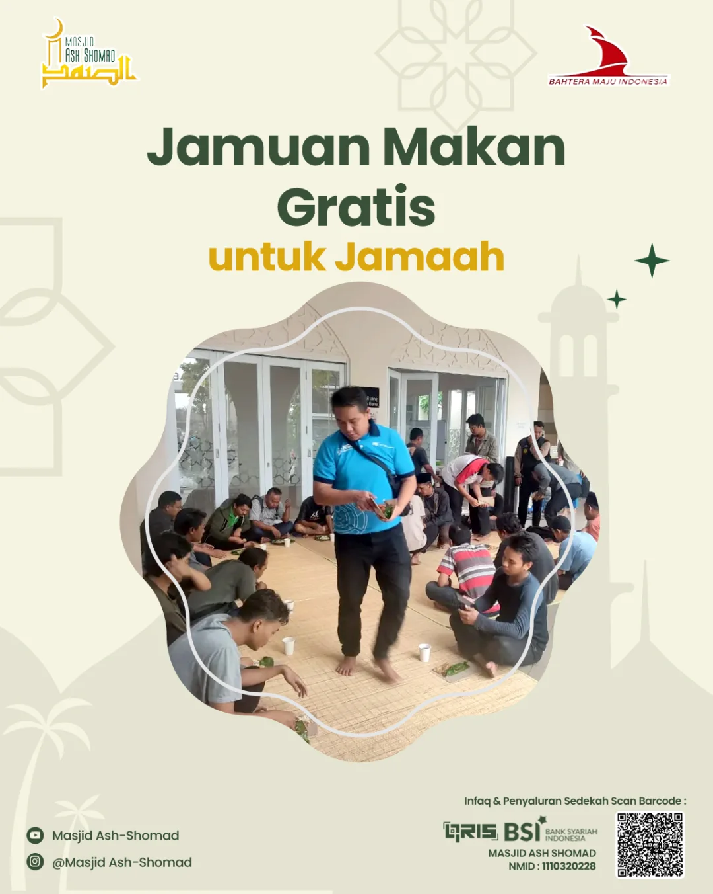

Galeri
Kegiatan
Momen Bersama Jamaah
Dokumentasi kegiatan dan aktivitas Masjid Ash-Shomad bersama jamaah.

Kajian
Rutin
Kajian Ba'da Subuh
Kajian rutin setiap Ahad pagi bersama ustadz terpercaya.
 TPA
Al-Quran
TPA
Al-Quran
TPA Al-Quran Anak
Pendidikan Al-Quran untuk anak-anak setiap Senin–Jumat sore.
 Kegiatan
Sosial
Kegiatan
Sosial
Bakti Sosial Bulanan
Santunan yatim dan pemberdayaan masyarakat sekitar masjid.
 Ramadhan
Ramadhan
Kegiatan Ramadhan
Buka puasa bersama, tarawih, dan itikaf di bulan suci.
 Majelis
Taklim
Majelis
Taklim
Majelis Taklim Ibu-Ibu
Forum diskusi dan sharing ilmu setiap Rabu pagi.